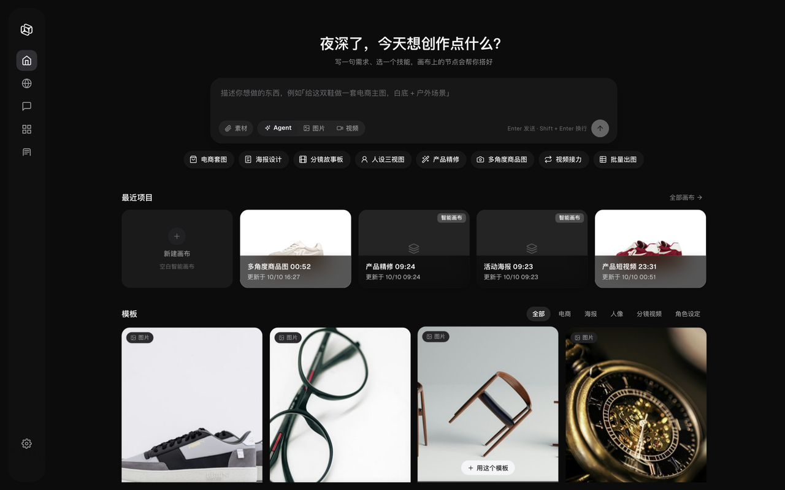
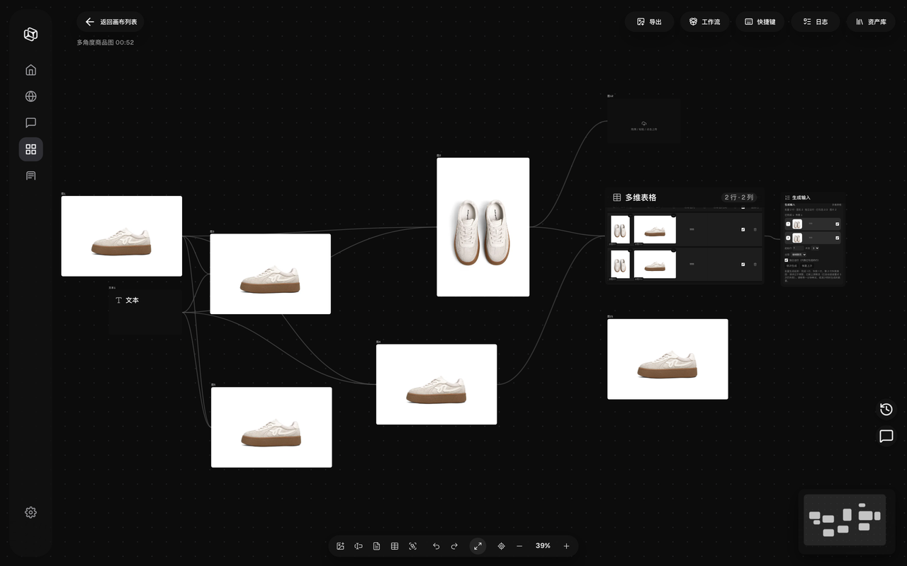
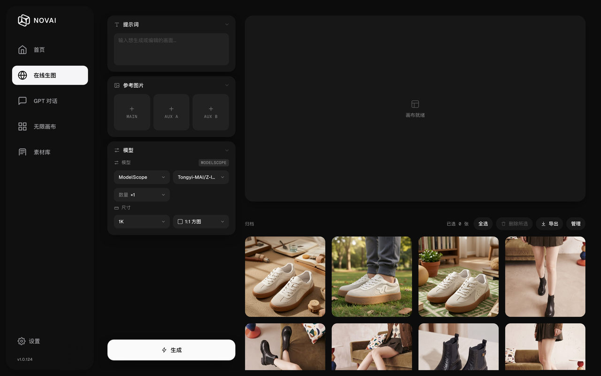
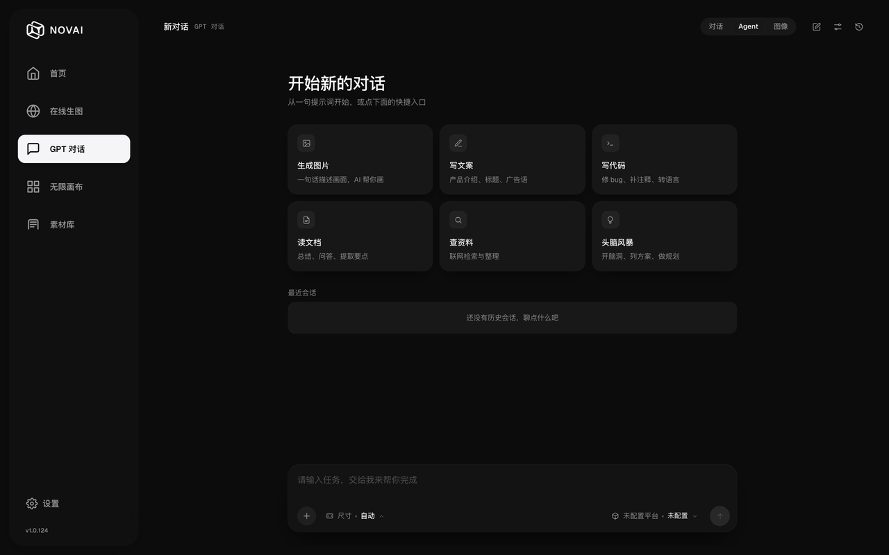
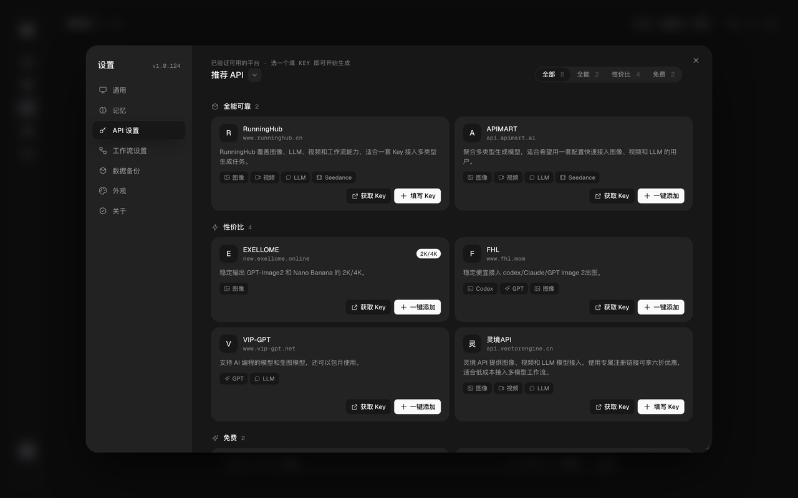

如何开始使用 NOVAI
NOVAI 是一款面向创作者的无限画布 AI 创作平台。你可以在无限画布上自由缩放、拖拽、连线，组合各种 AI 能力——文生图、图生图、AI 视频生成、GPT 多模态对话——所有操作在一个界面中无缝衔接。
三步上手
- 下载安装：根据你的操作系统下载对应安装包，双击安装启动。
- 配置 API：首次启动后进入「设置 → API 设置」。内置 ModelScope 免费额度可以直接用，也可以选一个平台填入自己的 Key。
- 开始创作：在首页输入框里用一句话描述需求（或点一个快捷模板），也可以进「无限画布」自己摆节点、连线。
安装与运行
推荐：下载安装包
无需安装 Python、无需配置环境，下载安装包双击即用。
Windows：下载 NOVAI-Setup-1.0.124.exe，双击安装，桌面自动创建快捷方式。
macOS：下载 NOVAI-Setup-1.0.124.dmg，拖入 Applications 文件夹即可。首次启动若提示"无法验证开发者"，请前往 系统设置 → 隐私与安全性 中点击"仍要打开"。
从源码运行
如需从源码运行或参与开发：
git clone https://github.com/invaders-2/NOVAI-Infinite-Canvas.git
cd NOVAI
pip install -r requirements.txt
python main.py产品概览
启动 NOVAI 后，你会看到如下首页：

图 1：NOVAI 首页——上方是创作入口（一句话描述需求 + 快捷模板），下方是最近项目和模板库。
界面结构
- 左侧导航栏：首页、在线生图、GPT 对话、无限画布、素材库，左下角是「设置」（带版本号）。
- 首页：输入一句话描述需求，可以让画布 AI 助手（Agent）直接帮你搭好画布；下面是快捷模板（电商套图 / 海报设计 / 分镜故事板 / 人设三视图 / 产品精修 / 多角度商品图 / 视频接力 / 批量出图）、最近项目和模板库。
- 无限画布：点进去先看到画布列表（搜索、排序、新建画布、最近编辑），打开某张画布才进入编辑器。
- 画布编辑器：右上角是「导出 / 工作流 / 快捷键 / 日志 / 资产库」，底部是画布工具条（撤销、重做、适应画布、缩放），右下角是缩略图导航；选中节点会浮出节点工具条。
- 素材库：素材 / 提示词库 / 工作流三个标签页，左侧按画布分类，右侧是选中素材的详情与生成信息。
- 设置：通用、记忆、API 设置、工作流设置、数据备份、外观、关于（版本 / 更新 / 回滚）。
功能介绍
核心能力
| 功能 | 说明 |
|---|---|
| 文生图 / 图生图 | 提示词直接出图，或带参考图生成；内置 Qwen-Image、FLUX.2-klein、Z-Image 等模型 |
| AI 视频生成 | 参考图 + 提示词生成视频，可设数量、比例、清晰度、是否带声音 |
| GPT 多模态对话 | 文本 + 图片对话；画布内提示词节点支持多轮上下文、角色与思考过程 |
| 无限画布与节点 | 图片、视频、文本、提示词、多维表格等节点自由摆放、连线，搭出可复用的工作流 |
| 画布 AI 助手（Agent） | 一句话说清目标，AI 自己规划并建节点、连线、跑生成；计划可先确认、改动可整体回滚 |
| 多维表格批量生成 | 一张表驱动批量出图 / 出视频，逐行素材与提示词、逐行真实进度、可随时停止 |
| 模板库 | 人像、电商套图、多角度、海报、修图、分镜、试穿、白底、社交封面、商品视频、视频接力等一键套用 |
| 图片编辑 | 调色（光线 / 颜色 / 曲线 / 细节 / 效果，可拖拽对比原图）、无损编辑，以及裁剪 / 扩图 / 重绘 / 擦除 / 打光 / 多角度 / 宫格 / 标注 |
| 抠图与高清放大 | 抠图（在线 API 绿幕，或本地 RMBG-2.0 高质量）；HD 高清放大（本地 Real-ESRGAN 放大到 2K / 4K） |
| 素材库与数据备份 | 素材按画布分类管理；「设置 → 数据备份」可一键打包画布 / 素材 / 设置并导出 |
| 更新与回滚 | GitHub / Gitee / ModelScope 三源检测更新，出问题可以回滚到更新前的备份 |
更多能力
下面这些是 1.0.107–1.0.124 期间陆续加入的能力，按需要挑着用：
模板库
首页下方的「模板」区域提供人像、电商套图、多角度、海报、修图、分镜、试穿、白底、社交封面、商品视频、视频接力等模板，鼠标移上去点「用这个模板」即可生成一张带好节点的画布，改改提示词就能出图。
数据备份与恢复
「设置 → 数据备份」可以一键把画布、素材和设置打包导出（带容量统计与占用提示），换电脑时导回即可；更新失败时也可以用更新前自动生成的备份回滚。
记忆
「设置 → 记忆」用来管理长期记忆：你告诉过它的偏好、常用风格会存下来，并在对话与生成请求里自动带上，不用每次重复交代。
调色与无损编辑
选中图片节点 → 工具条「调色」：光线 / 颜色 / 曲线 / 细节 / 效果五组参数，可拖拽分割线对比原图，应用后生成一张新图（原图保留）。「无损编辑」则直接在原图上改颜色与局部效果，不重新生成。
HD 高清放大
图片节点工具条里的「HD 高清放大」用本地 Real-ESRGAN 离线放大到 2K / 4K：首次使用会自动下载约 50MB 组件，之后离线可用；本来就接近目标分辨率的图会自动改用高质量缩放，不硬跑 AI。
抠图（两种）
图片节点 →「抠图」默认走在线生图 API 的绿幕抠图，快但要用到你的 API 额度；「高质量抠图」用本地 RMBG-2.0 模型离线推理 + 边缘精修，首次使用需要下载约 349MB 模型。
多维表格批量生成
添加「多维表格」节点：每一行是一组素材 + 提示词，点运行就按行批量出图 / 出视频，进度逐行显示、随时可停，一次批量只落一个结果节点。
画布 AI 助手（Agent）的计划模式
让 Agent 干活前，它会先给出计划卡片和影响面，你确认后再执行；执行过程实时可见，跑完可以整体回滚。
Lovart 设计代理
在「设置 → API 设置」里填 Lovart 的 Access Key / Secret Key 即可接入，支持图片与视频生成、素材上传与结果回传。
外部工具
仓库自带 Photoshop 面板与 Chrome 扩展（素材采集），也支持即梦 CLI、Codex CLI、Antigravity CLI 等命令行工具接入。
创建画布
点左侧导航「无限画布」进入画布列表，点「新建画布」按钮（列表右上角或空状态里都有）开始，首页的「新建画布」卡片同理。

图 2：无限画布——把图片、提示词、多维表格等节点自由摆布并连线，底部可缩放、适应画布。
画布操作
- 缩放：底部工具条的 − / +（也支持 Ctrl/Cmd + 滚轮）；点「适应画布」一键把所有节点收进视口
- 选中与移动：单击节点选中，选中后浮出节点工具条；拖动节点摆放位置
- 连线：从节点右侧的输出端口拖到另一个节点的输入端口
- 加节点：在画布空白处双击，弹出添加菜单；素材也可以直接从桌面拖进画布
- 缩略图导航：右下角的小地图显示全貌，点一下跳到对应位置
- 其它：完整的快捷键列表看编辑器右上角的「快捷键」面板
创建节点
节点是 NOVAI 工作流的最小单元：每个节点要么是一份素材，要么是一步 AI 处理。
添加节点
- 在画布空白处双击，弹出菜单，选需要的节点类型
- 图片 / 视频素材也可以直接拖进画布，自动变成节点
- 选中播放中/已有的分组节点再双击，新节点会直接加进这个分组
常用节点
| 节点 | 用途 |
|---|---|
| 图片节点 | 放参考图或生成结果；工具条里可裁剪、扩图、重绘、擦除、抠图、高清放大、调色、无损编辑、标注、旋转、下载、导出 PSD |
| 视频节点 | 放参考视频或生成结果，支持播放控制、做分镜表、人脸模糊 |
| 提示词节点（LLM） | 写提示词、跑文本模型；支持多轮上下文、角色、思考过程、@ 引用上游素材 |
| 文本节点 / 标签节点 | 在画布上写说明文字、做视觉标记（底色 / 字号 / 圆点 / 图标可调） |
| 多维表格节点 | 一张表驱动批量出图 / 出视频，逐行素材与提示词 |
| 分组 | 把多个节点收进一个可折叠分组，可以整组运行 |
连线规则
节点右侧是输出端口，左侧是输入端口，从一个节点的输出端口拖到另一个节点的输入端口即可建立连接。下游节点运行时可以直接拿上游结果；在节点的输入框里打 @ 也能引用上游素材。
生成图片
NOVAI 有两条出图路径：想快点就在「在线生图」页直接生成；想把流程串起来就在画布上搭节点。
方式一：在线生图页
- 左侧导航点「在线生图」
- 左栏填提示词；需要参考图就放进 MAIN / AUX A / AUX B
- 选平台与模型，设置数量和尺寸（也可以按输入图的比例自动适配）
- 点「生成」，结果会出现在右侧「归档」里，可全选 / 删除所选 / 导出 / 管理

图 3：在线生图——左侧填提示词、加参考图、选模型与尺寸，右侧归档生成结果。
方式二：在画布上搭流程
- 画布空白处双击，添加一个图片节点当结果位（需要参考图就先放参考图节点）
- 再添加一个提示词节点写提示词；要引用素材就在输入框里打
@ - 把提示词节点连到图片节点，或直接选中图片节点在工具条里点生成
- 出图后可以接着做放大 / 抠图 / 当视频参考等下游处理
提示词技巧
- 说清楚画面：主体 + 场景 + 光线 + 风格 + 构图，比堆关键词更有效
- 中文优先：内置 Qwen-Image 系列对中文提示词和画面里的中文字支持最好
- 让 AI 帮你写：提示词节点默认带「提示词优化」角色，一句话需求就能扩写成完整提示词
- 带参考图更准：用
@引用画布上的素材，或在在线生图页放 MAIN / AUX 参考图
生成视频
视频生成通常需要一张参考图（可以来自画布上的图片节点），也可以只用文字描述。
图生视频步骤
- 准备一张参考图（画布上的图片节点，或素材库里的图）
- 画布空白处双击，添加视频节点，把参考图拖给它（或在输入框里用
@引用） - 写提示词描述动作与镜头，设置数量、比例、清晰度、是否带声音；更多参数在「更多参数」面板里
- 点运行；生成中节点上会显示状态和耗时，完成后自动落回画布
用参考视频做分镜表
经典画布和智能画布都支持：按「每段秒数」（1–5 秒，默认 3 秒）把参考视频切成一段一行，每行只用自己的片段当视频参考——适合逐段控制画面与节奏。
GPT 对话
「GPT 对话」是一个独立的聊天页，适合先把需求聊清楚、写文案、磨提示词；画布里的「提示词节点」则可以把对话直接接进生成流程。

图 4：GPT 对话——从一句提示词开始，支持快捷入口、最近会话与图片输入。
使用方式
- 左侧导航点「GPT 对话」，直接在底部输入框说话；也可以点快捷入口（生成图片 / 写文案 / 写代码 / 读文档 / 查资料 / 头脑风暴）
- 顶部可切换「对话 / Agent / 图像」：对话是纯聊天，Agent 会让 AI 直接动手建画布、跑生成，图像模式适合围绕一张图来回改
- 输入框左侧的「+」可以加参考图；聊过的内容会进「最近会话」，随时切回继续
在画布上使用
- 画布空白处双击添加提示词节点：支持多轮上下文、角色（默认「提示词优化」）、思考过程实时展示
- 输入：用
@引用上游素材，或把上游节点连进来 - 输出：把生成的提示词直接接到图片 / 视频节点去执行
AI 协议配置
所有平台的 Key 都在「设置 → API 设置」里管理：内置的 ModelScope 免费额度开箱可用，也可以选一个平台填 Key，或点「一键添加」。

图 5：设置 → API 设置——内置 ModelScope 免费额度，也可选一个平台填入 Key 开始生成。
支持的接入方式
| 协议 / 类型 | 适合 |
|---|---|
| OpenAI 兼容 | 各类中转与官方兼容接口（gpt-image、Nano Banana 等），以及本地 / 自建服务 |
| 异步协议 | APIMart 这类异步出图平台 |
| Gemini 原生 | Google Gemini（图像走 /v1beta） |
| 方舟 / Ark | 火山引擎（豆包 Seedream 生图、Seedance 视频） |
| RunningHub | OpenAPI 工作流 |
| 命令行 | 即梦 CLI、OpenAI Codex CLI、Antigravity CLI |
| 设计代理 | Lovart（Access Key / Secret Key 签名接入） |
| ModelScope | 内置免费额度（无需配置） |
平台下拉里只会出现已经配好 Key 的供应商；没配 Key 的平台不会出现在生成节点里，也不会被当成默认平台。免费额度的具体限制由 ModelScope 侧决定，可能随时调整。
内置模型列表
NOVAI 内置 ModelScope 免费额度，开箱即用；模型会随版本更新持续扩充：
| 名称 | 类型 | 说明 |
|---|---|---|
| Qwen3-235B | 对话 | 通义千问旗舰，逻辑推理 / 写作 |
| Qwen3-VL-235B | 对话 | 多模态，可分析图片 |
| Qwen-Image-2512 | 生图 | 中文文字渲染最优，海报 / Banner 首选 |
| FLUX.2-klein-9B | 生图 | 画面质感最好 |
| Z-Image-Turbo | 生图 | 1–2 秒快速出图 |
| Qwen-Image-Edit-2511 | 改图 | 说话就能改图 |
| agnes-video-v2.0 | 视频 | 免费视频生成 |
除内置额度外，在「设置 → API 设置 → 新增平台」可以接入你自己的账号；模型名按平台各自维护，不会互相替换。
人脸合规与换脸
NOVAI 的视频编辑基于火山引擎 Seedance 2.0。平台对未经授权的真人肖像有严格的内容安全审核——企业认证只是前提，参考素材必须走以下三条合规通道之一：
三条合规通道
| 通道 | 适用场景 | 操作 |
|---|---|---|
| A · 已授权真人素材 | 换特定真人（艺人 / 模特 / 本人） | 方舟体验中心 → 我的 → 真人人像 → 建资产组 → 真人本人扫码认证上传 → 你接收拿 Asset ID → API 用 asset://asset-xxx 当参考 URL |
| B · 信任模型产物（推荐） | AI 脸 + AI 视频（30 天内） | Seedance 2.0 生成的视频 / Seedream 5.0 lite 生成的图，同一账号 30 天内可直接作参考，零门槛不拦截。注意：必须是模型原始产物，不可剪辑 / 压缩 / 转码 |
| C · 预置虚拟人像库 | 不需要指定真人 | 平台免费虚拟人像，零合规风险，开箱即用 |
换脸提示词模板
严格编辑 视频1：将 视频1 中人物的面部替换为 图片1 中的人脸，
面部细节参考 图片2（特写）。动作、走位、场景、运镜、光线
全部保持不变，只修改面部。新脸与原脸型、光影自然融合，
表情跟随原动作。保持无字幕，不要生成水印。- 素材配置：
视频1=动作骨架 ·图片1=目标脸正脸 ·图片2=目标脸特写（可选但强烈建议） - 参数：
role=reference_video+reference_image×N · 参考视频 ≤15.2s（超长自动截取）· 自动静音 · 自动公网化 - 换衣服 / 换场景 / 换人物同理：把「面部替换为图片1中的人脸」换成对应对象即可，保持「全部保持不变，只修改…」句式
NOVAI 实操指南
以「网上视频换脸」为例，完整走一遍 NOVAI 画布操作。全程在智能画布内完成，无需命令行。
第 1 步：把素材放进画布
- 从文件夹把视频拖进画布，自动生成视频节点
- 把参考图拖进画布，自动生成图片节点
- 点击节点 → 上方浮出工具栏（预览 / 裁剪 / 扩图 / 遮罩 / 画笔 / 宫格 / 人脸模糊 / 下载）
- 视频节点工具栏点「人脸模糊」→ 自动检测全部人脸并模糊 → 结果自动加入节点（原视频保留）
第 2 步：@ 引用素材
- 点击画布顶部输入框
- 输入
@→ 弹出素材浮层（节点 + 资产库双 Tab） - 点选视频节点 → 自动插入
@视频1；点选图片节点 → 自动插入@图片1 - 浮层自动关闭，标签可直接删除；多个素材继续
@（编号按引用顺序）
也可以从右上角「画布对话助手」弹窗输入框里 @——同样支持素材引用。
第 3 步：选模型 → 写提示词 → 运行
- 顶部选择：平台 = 火山引擎 · 类型 = 视频 · 模型 = doubao-seedance-2-0-260128
- 输入框粘贴换脸提示词（上一节模板），
@视频1@图片1自动携带为参考素材 - 点「运行」→ 生成完成后：结果自动落画布（新视频节点）· 底部弹出建议条（换衣服 / 换场景 / 加运镜…一键继续）· 参考视频自动截取 / 静音 / 公网化
常用提示词模板（可直接复制）
| 任务 | 模板 |
|---|---|
| 换鞋子 | 严格编辑 视频1：将视频1中的鞋子替换为图片1中的白色运动鞋，动作、场景、运镜、光线保持不变，只修改鞋子 |
| 换衣服 | 严格编辑 视频1：将视频1中人物的上衣替换为图片1中的红色连衣裙，动作、场景、运镜、光线保持不变，只修改服装 |
| 换场景 | 严格编辑 视频1：将视频1中的场景替换为图片1中的海边沙滩，人物动作、运镜、光线保持不变，只修改场景 |
| 换人物 | 严格编辑 视频1：将视频1中的人物替换为图片1中的人物，动作、走位、场景、运镜、光线保持不变，只修改人物 |
常见问题
Q: 为什么我的图片生成失败了？
常见原因：① API Key 无效或余额不足；② 网络连接问题；③ 提示词触发了内容安全过滤。请检查 API 设置中的连接测试结果，并尝试更换提示词。
Q: macOS 提示"无法验证开发者"或"已损坏，无法打开"怎么办？
这两个提示都是因为安装包没有 Apple 开发者签名，不是文件坏了。任选一种处理：右键点 NOVAI.app → 「打开」→ 再点「打开」；或者到 系统设置 → 隐私与安全性 点「仍要打开」；也可以直接在终端执行 sudo xattr -rd com.apple.quarantine /Applications/NOVAI.app。
想先确认下载是否完整：shasum -a 256 NOVAI-Setup-1.0.124.dmg 与 Release 页上的 sha256 对照，或 hdiutil verify NOVAI-Setup-1.0.124.dmg。如果清掉隔离属性后仍报损坏，再补一步 sudo codesign --force --deep --sign - /Applications/NOVAI.app。
Q: Windows 上点更新后提示失败怎么办？
在线更新需要往安装目录写文件：如果 NOVAI 装在 C:\Program Files 这类需要管理员权限的目录，普通权限下会写不进去，界面会提示「安装目录不可写」。处理办法：以管理员身份运行 NOVAI 后再更新，或者到 GitHub Releases 下载最新安装包覆盖安装（用户数据不会丢）。更新失败时也可以在「设置 → 关于」里回滚到更新前的备份。
Q: 如何把我的画布分享给别人？
画布编辑器右上角的「导出」可以把整张画布导出成 PNG 或 SVG（不受当前缩放影响，包含全部节点）；图片节点还能单独导出，支持 PSD 分层文件。NOVAI 目前没有「画布文件导入导出」这种格式，分享素材建议直接发导出的图片，或让对方用同一个模板库模板重建。
Q: 视频生成为什么这么慢？
视频生成是计算密集型任务，耗时取决于时长、分辨率和模型。建议先用较低清晰度测试，确认效果后再提升参数。
Q: 支持离线使用吗？
本地能力可以离线用：HD 高清放大（Real-ESRGAN）和「高质量抠图」（RMBG-2.0）都是本地推理，只是首次使用需要联网下载模型（约 50MB / 约 349MB），之后离线可用。云端模型（ModelScope、火山、OpenAI 等）以及你本地部署的 ComfyUI 工作流则需要对应网络或本地服务可达。
Q: 数据会传到云端吗？
不会。NOVAI 是本地桌面应用，你的提示词、图片和工作流数据只存在你自己的电脑上。只有当调用云端 API（如 ModelScope、火山引擎）时，对应的请求数据才会发送到对应平台。
Q: 换脸 / 人脸编辑提示「包含真人身份 / 隐私信息」怎么办？
这是火山引擎的内容安全策略，不是代码错误。解决方法：① 目标脸改用 Seedream 5.0 lite 生成（信任产物 30 天内可直接用）；② 参考视频里的人脸先用 NOVAI 的「人脸模糊」处理；③ 网上下载的真人素材无法直接使用，需走真人授权流程（见上方「人脸合规与换脸」章节）。
Q: 人脸模糊在哪？
智能画布中选中视频节点 → 上方工具栏「人脸模糊」按钮（人像图标）。点击后自动检测视频中全部人脸并高斯模糊，处理结果自动加入节点，原视频保留。
更新日志
v1.0.124 (2026-10-11)
- 新版界面（NOVAI 2.0）逐页替换：外壳、画布列表、在线生图 / Z-Image、GPT 对话、设置弹窗都改用 Vue 重写；旧界面保留在「设置 → 关于 → 旧版界面」
- 新增：模板库；图片「调色」重做与「无损编辑」；「数据备份」与「记忆」面板
- 更新修复：Windows 版更新失败（安装目录不可写时给出明确提示、失败显示真实原因、新装默认装到用户可写目录）；macOS 安装包补 ad-hoc 签名，减少「已损坏」提示
- 界面：全局去掉线框、弹层改磨砂玻璃、设置页统一设计语言
- 其它：安装包不再内置大模型运行时，改为首次使用时按需下载
v1.0.107 – v1.0.123 的更新内容见 GitHub Releases；产品内「设置 → 关于 → 更新」里也能看到每个版本的更新说明。
v1.0.106 (2026-08-11)
- 新增：视频「人脸模糊」工具——选中视频节点 → 工具栏一键模糊全部人脸，规避平台真人审核（YuNet 检测 + 高斯模糊，结果自动入节点）
- 新增：生成后快捷建议条——生成完成自动弹出「换衣服 / 换场景 / 加运镜」一键继续编辑
- 新增：生成结果自动落画布——视频 / 图片生成完成自动创建节点，无需手动导入
- 修复：视频播放控制条全面修复（播放 / 暂停 / 全屏 / 进度条），桌面端与浏览器行为一致
- 修复：视频参考素材公网化改为云上传优先（Litterbox / temp.sh），不再依赖本地隧道
- 优化：Seedance 编辑链路自动截取（≤15.2s）、自动静音、参考素材自动公网化
v1.0.89 (2025-07-20)
- 新增：ComfyUI 协议支持，可直接连接本地 ComfyUI 工作流
- 新增：节点搜索功能，双击画布快速查找和添加节点
- 优化：画布渲染性能提升 40%，200+ 节点流畅运行
- 修复：macOS 下部分快捷键冲突问题
- 修复：视频生成节点在某些网络环境下超时的问题
v1.0.88 (2025-07-13)
- 新增：批量处理模式，支持参数模板一键批量生成
- 新增：历史记录面板，可回看和重新编辑过往生成结果
- 优化：API 配置页面 UI 改版，支持一键测试连接
- 修复：Windows 下高分屏缩放显示异常
v1.0.87 (2025-07-06)
- 新增：Gemini 2.0 Flash 模型节点
- 新增：工作流导入/导出功能（.novai 格式）
- 优化：提示词输入框支持语法高亮和自动补全
- 修复：部分情况下节点连线断开后无法重连的问题
v1.0.86 (2025-06-29)
- 新增：Loop 和 Batch 逻辑控制节点
- 优化：首次启动引导流程
- 修复：图片输出节点中文路径兼容性问题
v1.0.85 及更早
初始版本发布，包含：无限画布、SDXL 图像生成、GPT 对话、基础节点系统、ModelScope 免费 API 内置。详见 GitHub Releases。